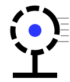
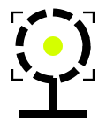

GRID / 28 PX
CENTER / AXIS
INK #0B0B0F · PAPER #F2F1EC · BEAM #2B37FF · SIGNAL #D4FF00
GEO / GENERATIVE ENGINE OPTIMIZATION · 生成式引擎优化
让 AI 引用你的
那一版答案
搜索引擎的时代，品牌争的是排名；生成式引擎的时代，答案只有一段，品牌争的是被引用。识光把客户的知识资产，翻译成 AI 愿意引用、能够引用、且引用准确 的结构。
SAMPLED 12,486 QUERIES / DAY
ENGINES · CHATGPT / GEMINI / PERPLEXITY / 元宝 / 千问 / DEEPSEEK / 豆包
UPDATED 14.09.2026 · XI'AN
01 / CORE
内核
POSITIONING · NARRATIVE
搜索引擎的时代，品牌争的是排名；生成式引擎的时代，答案只有一段，品牌争的是被引用。我们的工作是把客户的知识资产，翻译成 AI 愿意引用、能够引用、且引用准确 的结构。
01 / WHAT WE SEE
光不可见，
但可度量
用户问 AI 的那一瞬间，你的品牌是否被"看见"，此前无法观测。识光把这件事变成一条可读的曲线——可见度指数、引用位置、竞品份额。
02 / WHAT WE DO
不是优化排名，
是改写答案
我们不堆关键词。我们重构知识结构、来源可信度与语义密度，让模型在生成答案时，把你的表述当作最可靠的那一版。
03 / HOW WE WORK
工程，
不是玄学
每一次建议都来自可复现的采样：跨引擎、跨模型、跨时间的批量查询与结构化比对。结论必须能被第二次验证。
BRAND CLAIM / 品牌主张
被看见，
或者不存在。
这是 GEO 时代唯一真实的二分法。搜索结果页还有第十名可以苟活；当 AI 只给一段答案，没被引用就等于没有被检索过。以深色为默认画布——绝大部分信号运行在你看不见的地方，我们的工作就是把其中一小段点亮。
02 / METHOD
可度量，才可优化
VISIBILITY INDEX · STRUCTURED SAMPLING
六个指标，
一条可读的曲线
提及率、引用率、相对声量、位次、准确率、内容侧质量——每一次采样都落到 结构化数据，每一次结论都能被第二次验证。我们承认边界：哪些能测、哪些是置信区间，直说。
VISIBILITY INDEX · CHATGPT · GEMINI / PERPLEXITY · N=12,486 · 14.09.2026
示意数据 · 以正式采样周报为准
03 / SIGNAL SAMPLING
扫描采样层
6PX ON / 3PX OFF
FIG 5.1 — SCANLINE SAMPLING / 扫描采样度：仅用于大号展示字，正文文字禁用
STATUS / STANDBY
04 / IP · ORB
采样单元 ORB
STATE MACHINE / NEUTRAL → SCANNING → CAPTURED


待机 / NEUTRAL
ORB 是识光的采样单元。待机时它只监听：引擎在回答什么，答案里有没有你。
STATE / 01 · LISTENING